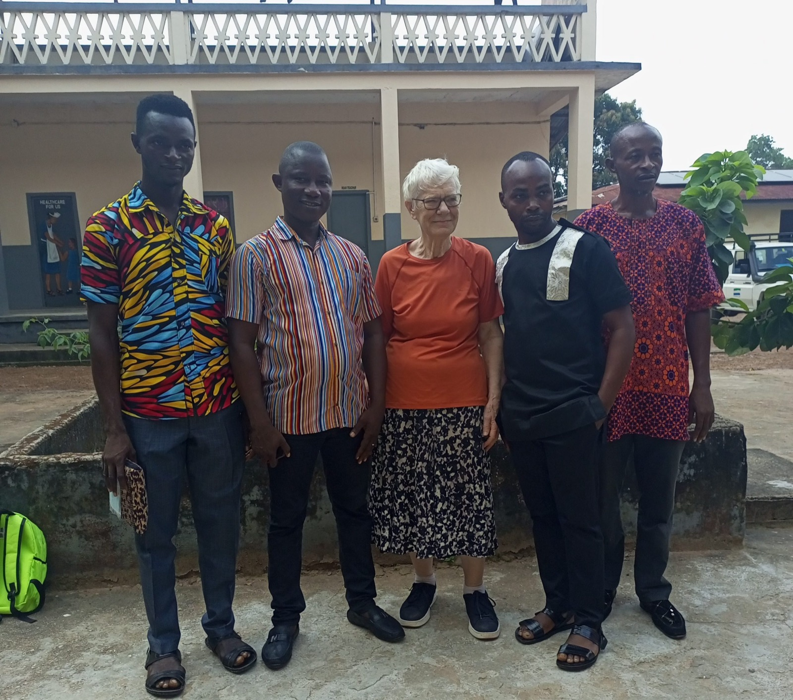
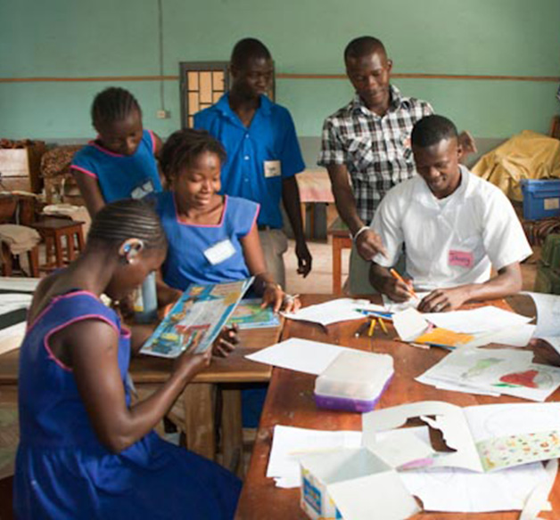

📍 Teko Road, Makeni • ✉️ stjosephshischool@gmail.com
DONATEAudiology department
Pupils are fitted with hearing aids and encouraged to listen & speak. All but a tiny minority benefit — even to hear their own voice. Most develop intelligible speech if they start early.


Only 1
audiology lab in Sierra Leone.